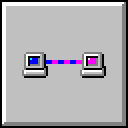
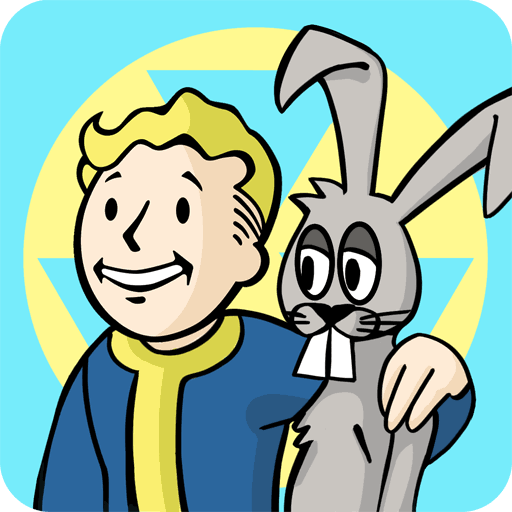

2025-12-24, N1
CMOS Cosmos. Демосцена жива
CMOS Cosmos. Demoscena jywa
CMOS Cosmos. Scene is alive
Несподівано отримав флешбек в нульові, коли мережі мені знайшли новий реліз піонерів демосцени Razor 1911
Nespodiwano otrymaw flešbek w nul’jowi, koly mereži meni znajšly novyj reliz pioneriw demosceny Razor 1911
I had an unexpected flashback to the 00s when the networks bring me a new release from scene pioneers Razor 1911
YouTube
pouët.net


2025-12-23, N1
Підсумки 2025-го року: Альбом року
Pidsumky 2025-go roku: Al’bom roku
2025 wrap-up: Album of the year
Зібрав список музичних альбомів, що мені найбільше сподобалися цього року
Zibraw spysok muzyčnyh al’bomiw, ščo meni najbil’še spodobalysja c’oğo roku
Номінанти
Nominanty
Nominees
- 2025-01-13 - Luigi Tozzi, “Sentient” - Bandcamp
- 2025-03-28 - Rrose, “2 or 3 Drops of Height Have Nothing to do With Savagery” - Bandcamp
- 2025-03-28 - Sandwell District, “End Beginnings” - Bandcamp
- 2025-04-11 - .VRIL, “Crystal Cell Energy” - Bandcamp
- 2025-05-05 - Legowelt, “Synths Below Sea Level” - Bandcamp
- 2025-05-09 - Len Faki, “Zig Zag” - Bandcamp
- 2025-05-23 - Quelza, “Pensa Poetico” - Bandcamp
- 2025-05-23 - Claudio PRC, “Self Surrender” - Bandcamp
- 2025-05-30 - Ostgut Ton, “Klubnacht 01” - Bandcamp
- 2025-06-20 - Donato Dozzy & Sabla, “Morpho” - Bandcamp
- 2025-07-11 - Answer Code Request & Paul Claude, “Sequel” - Bandcamp
- 2025-07-25 - Inigo Kennedy, “Ghost Reaction” - Bandcamp
- 2025-08-01 - Blackploid, “Cosmic Drama” - Bandcamp
- 2025-09-19 - Vera Logdanidi, “To All That We Lose And All We Fight For” - Bandcamp
- 2025-09-26 - Brendon Moeller & Beat Pharmacy & Echologist, “Echocord Excursions” - Bandcamp
- 2025-12-05 - Voices From The Lake, “II” - Bandcamp
Переможець
Peremožec’
Winner
Sandwell District, “End Beginnings”
2025-12-18, N1
Підсумки 2025-го року: Серіал року
Pidsumky 2025-go roku: Serial roku
2025 wrap-up: TV series of the year
Зібрав список серіалів, що мені найбільше сподобалися цього року
Номінанти
Nominanty
Nominees
- 2025-01-16 - Severance, season 2 - Wikipedia
- 2025-05-25 - Rick and Morty, season 8 - Wikipedia
- 2025-07-11 - Dexter: Resurrection, season 1 - Wikipedia
- 2025-07-23 - South Park, season 27 - Wikipedia
- 2025-08-06 - Wednesday, season 2 - Wikipedia
- 2025-08-12 - Alien: Earth, season 1 - Wikipedia
- 2025-09-28 - Simpsons, season 37 - Wikipedia
- 2025-10-15 - South Park, season 28 - Wikipedia
- 2025-11-07 - Pluribus, season 1 - Wikipedia
Переможець
Peremožec’
Winner
Alien: Earth
2025-12-10, N1
Voices From The Lake, “II”
Неймовірно красиве ембієнт-техно від італійців Донато Скарамуцці (відомого як Donato Dozzi) та Джузеппе Тіллієчі (відомого як Neel)
Nejmowirno krasywe embijent-tehno wid italijciw Donato Skaramucci (widomoğo jak Donato Dozzi) ta Džuzeppe Tilliječi (widomoğo jak Neel)
Inbelievable krasywe ambient-techno from Italians Donato Scaramuzzi (known as Donato Dozzi) and Giuseppe Tillieci (known as Neel)
Bandcamp
2025-12-09, N1
The balance
Mortazavi describes finding a balance between concentration and letting go as the core element of his musical work.
Джерело: Опис Mohammad Reza Mortazavi в Spotify, на який я потрапив, коли отримав сповіщення про новий трек Ricardo Villalobos “Swap”
2025-12-05, N1
Початок
Згадка про Web
На створення цієї сторінки мене надихнула стаття, що прийшла в мій RSS-агрегатор від Kagi щодо (їх) Kagi Small Web. Це мені нагадало про той час, що журналісти зараз називають Web1, мережею 90-х (або “мережою тільки для читання”, хоча наразі я не читаю, а пишу). Я пригадав, наскільки було цікаво і захопливо користуватися інтернетом тоді, коли сайти були несхожими один на інший, існувала подорож інтернетом (це відображено в словах browsing, surfing, Netscape Navigator), та існував процес створення власного сайту через експерименти та дослідження.
Вигода від повернення до Web1
Наразі це більш цікавий виклик справжнього мінімалізма - триматися простоти, використання лише HTML і необхідної кількості стилей, не використовувати JavaScript, трекери. Це також і можливість більше часу приділити власному сайту та іншим способам провести час окрім як читати чергові нудотні новини про Трампа в соцмережах. Це можливість краще сфокусуватися на тому, що мені подобається, краще структурувати результати досліджень, більше часу приділяти аналізу. Це можливість отримати хоча б тисячну пункта до психічної стабільності під час зброїної агресії, окупації та геноциду українців з боку Московії.
Оновлення:
- 2025-12-09 - Дописав другий параграф
Web1
Про Web1 (чи то Web 1, чи то Web 1.0)
Джерело запиту Web1
Я проаналізував поточний рух Small Web і усвідомив, що він не випадковий. І що він не єдиний. В часи, коли відбувається масова маніпуляція інформацією за допомогою соціальних мереж Web 2.0 (наприклад, Ілоном Маском в соціальній мережі Twitter/X), перевантаження непотрібною інформацією або рекламою, що неможливо вимкнути (як в соціальний мережах Facebook та Instagram), є запит на дійсно вільний інтернет без обмежень, реклами та російської пропаганди. Також, є запит на лікування кліпового сприйняття інформації, FOMO, та зламаних дофамінових контурів як наслідок.
Про Web 2.0
Явище Web 2.0 було викликано тим, що інтернет поступово ставав популярнішим інструментом, з’явилися технології (зокрема, AJAX), і доступні потужності. Це дозволило декільком компаніям централізувати блогінг (та мікроблогінг), долучити до інтернету технічно неграмотних людей, а потім вільно використовувати приватну інформацію всіх для рекламної діяльності. “Web 2.0” це такий самий buzzword як і “AI”: вигаданий журналістами та інвесторами, що повідомляє про неіснуючу цінність.
Для користування Web1, на відміну від Web 2.0, потрібні базові знання HTML та CSS. І хоч вивчити це не складно, але вже обмежує публікацію лише тими людьми, що мають достатню нейропластичність та бажання вивчати та пробувати нове.
Про Web3 (3.0)
Наразі багато розмов про Web3 як намагання подалати проблеми Web2, але, по суті, це ускладнення системи без необхідності (всі інструменти завжди були в Web1). Та й вся інформація все одно не належить користувачеві, а провайдеру Web3, що не вирішує проблему використання (та злив) даних користувачів.